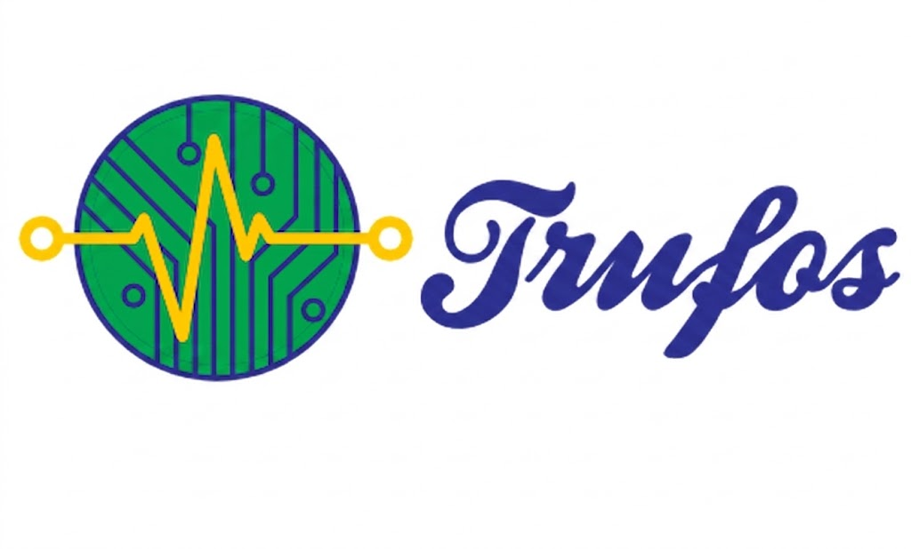

Manutenção Corretiva, Preventiva e Qualificação Térmica
Trufos - Assistência Técnica Hospitalar
Responsável Técnico com trajetória em engenharia clínica e manutenção desde 1997.
Autorizada Nacional Sispack | Treinamento Técnico Tuttnauer
Solicitar Orçamento via WhatsAppAtuação focada na segurança do paciente e conformidade com a RDC 15/2012, garantindo a eficiência operacional do seu parque tecnológico.